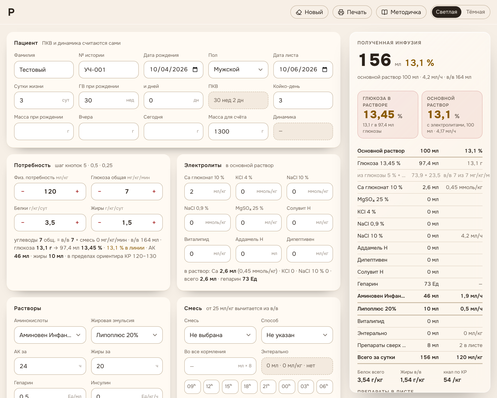
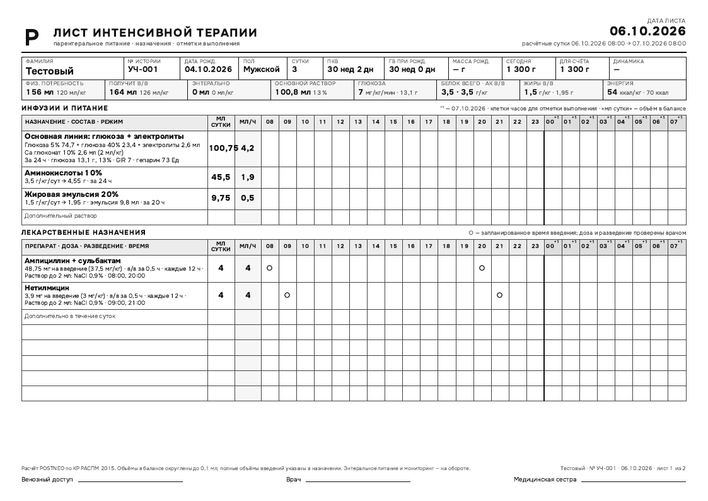
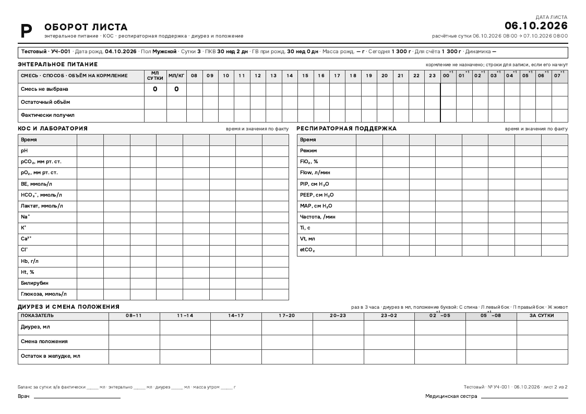
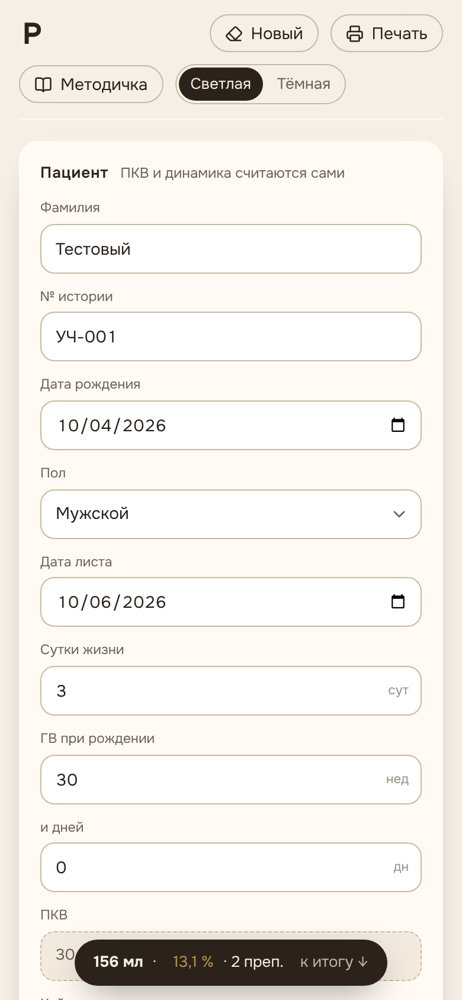

Учебный пример: 1450 г, вторые сутки
91,5 мл основного раствора
- Глюкоза в/в
- 7,54 г, 8,37 %
- Аминокислоты
- 25 мл
- Жировая эмульсия
- 3 мл
- Гепарин
- 58 Ед
110 мл/кг, глюкоза 5 мг/кг/мин, белок 2 и жиры 1,5 г/кг, грудное молоко по 5 мл восемь раз.
Жидкость, глюкоза, белок и препараты новорождённого по КР 2015, с печатью на А4.

91,5 мл основного раствора
110 мл/кг, глюкоза 5 мг/кг/мин, белок 2 и жиры 1,5 г/кг, грудное молоко по 5 мл восемь раз.


Антибиотики, кардиотоники, седация, гормоны, кровь: 9 групп с концентрациями форм. Растворитель и объём считаются в баланс.
Нагрузочная доза, титрование кардиотоников по шприцу, per os без разведения.
Две смеси по своим кормлениям. От 25 мл/кг белок, жиры и углеводы смеси вычитаются из внутривенных доз.
Трофическое питание до 25 мл/кг идёт сверх расчётной жидкости.
Тот же ребёнок, три объёма кормления. Цель по глюкозе и белку одна, меняется только внутривенная часть.
| Кормление | Энтерально | Глюкоза в/в | Аминокислоты | Эмульсия | Основной раствор | Энергия |
|---|---|---|---|---|---|---|
| 5 мл восемь раз | 40 мл | 7,54 г, 3,6 мг/кг/мин | 25 мл | 3 мл | 91,5 мл | 43 ккал/кг |
| 10 мл восемь раз | 80 мл | 4,64 г, 2,2 мг/кг/мин | 21 мл | 0 мл | 58,5 мл | 50 ккал/кг |
| 15 мл восемь раз | 120 мл | 1,84 г, 0,9 мг/кг/мин | 16 мл | 0 мл | 23,5 мл | 61 ккал/кг |
Правки приходят из отделения и выкладываются в тот же день.
Шаги округления как в бумажном листе: граммы белка и жиров до 0,1, проценты до сотых.
Болюс вводится сразу; длительность осталась только у микроструйного пути.
Справочник собран по аптеке отделения: 74 новых препарата с концентрациями форм.
Вторая смесь по своим кормлениям, углеводная нагрузка общая и в/в.
Открывается без регистрации, с вымышленным ребёнком внутри. Проверьте цифры или очистите форму и начните свой лист.
